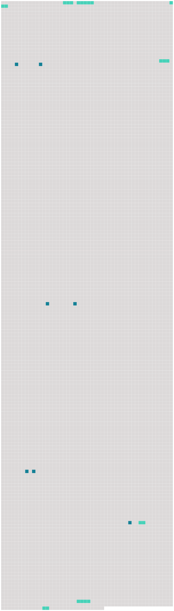

Longueur nb maillons : 14 mentions |
|
Il était leur constant recours, leur aide dans toutes leurs difficultés, et l'on avait surnommé [sa fille Rebecca] — [la sœur de charité protestante] L'amitié la plus vive, la plus confiante, la plus délicieuse qui fut jamais, unit bientôt Élisabeth et [cette jeune fille] [33 phrases] La courageuse femme écrivait à [sa belle-sœur Rebecca] : « Je voudrais pouvoir [vous] écrire une longue lettre, sans [vous] dire un seul mot de nos affaires. [143 phrases] Comme [vous] auriez aimé la petite Anna, si [vous] l'aviez vue tout à l'heure, pendant ses prières, ses petits bras enlacés à mon cou ; elle répandait des larmes à flots. [112 phrases] [Imaginez] que [vous] voyez mon pauvre mari, lui qui a tout quitté pour venir chercher un climat plus doux, emprisonné entre ces murailles hautes et humides, exposé au froid et au vent, qui le pénètrent jusqu'aux os ; et impossible d'avoir du feu, si ce n'est celui de la cuisine, fait avec du charbon de terre, dont la fumée l'oppresse, lui serre la poitrine jusqu'à lui donner presque des convulsions ; et pas une goutte de sirop, rien pour calmer cette toux. [25 phrases]
[Vous] riez, [ma sœur] , mais c'est un bon exercice, qui réchauffe plus vite que le feu quand on se remue de bon cœur. [59 phrases] — [Chère, chère Rebecca] , que de fois n'avons -nous pas veillé ensemble, nous deux auprès du foyer, comme m'y voici, maintenant toute seule. [4 phrases] « Une semaine vient de s'écouler, [chère sœur] , sans qu'une seule ligne sortie de ma plume en ait fixé les souvenirs. |
 |
Il est possible de télécharger la ressource sur la page Ortolang |
Si vous avez des questions ou vous voyez des erreurs, merci d'envoyer un mail à silvia.federzoni89@gmail.com |